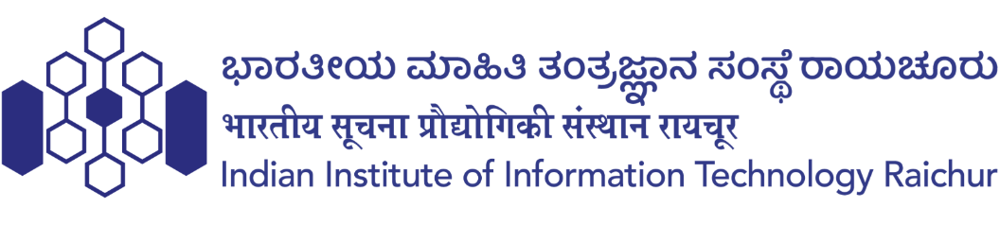

Dr. Mehbub Alam
Hi, I am Mehbub, an Assistant Professor in the Department of Computer Science and Engineering at the Indian Institute of Information Technology Raichur. I was previously a Postdoctoral Researcher at the Centre for Cyber-Physical Systems (C2PS), Khalifa University, Abu Dhabi. I received my Ph.D. in Computer Science and Engineering from the Indian Institute of Information Technology Guwahati. During my Ph.D., I worked under the supervision of Dr. Rakesh Matam and Prof. Ferdous Ahmed Barbhuiya at the Design Innovation Centre (DIC) Lab.